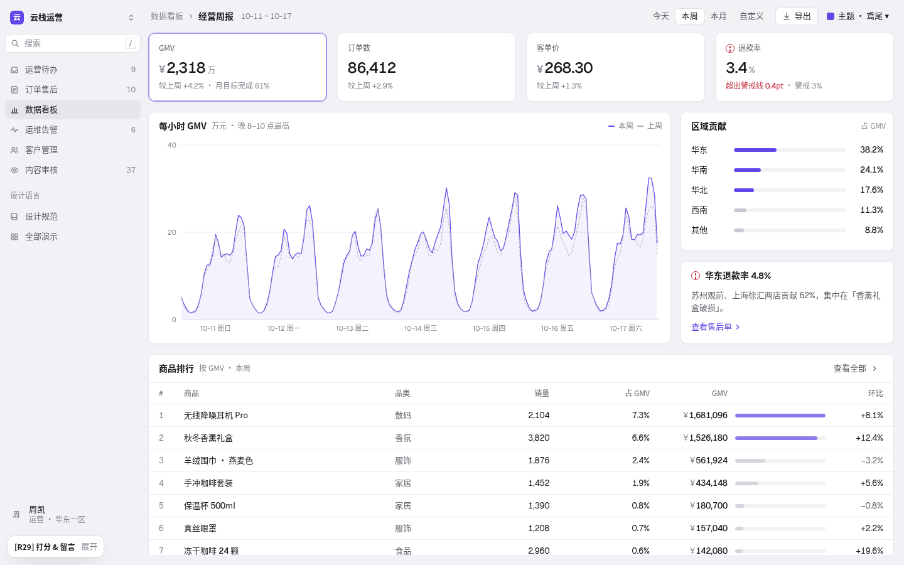
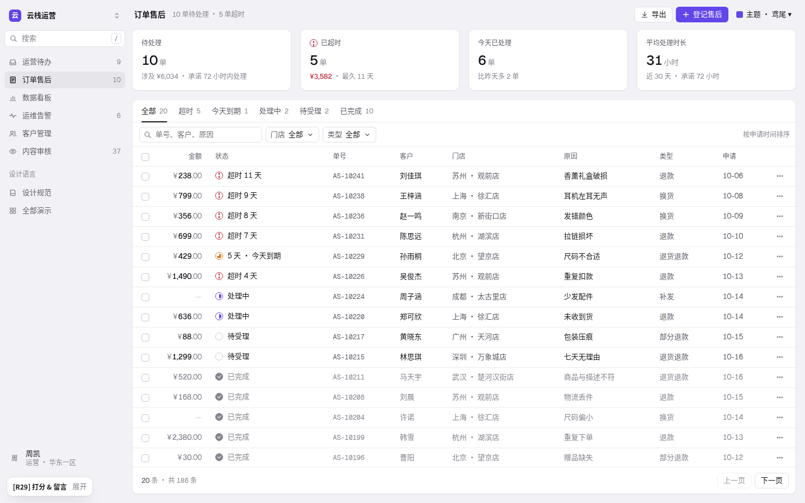
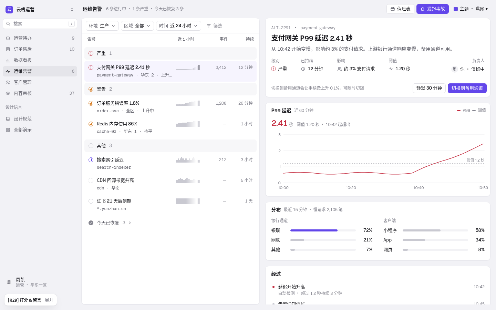
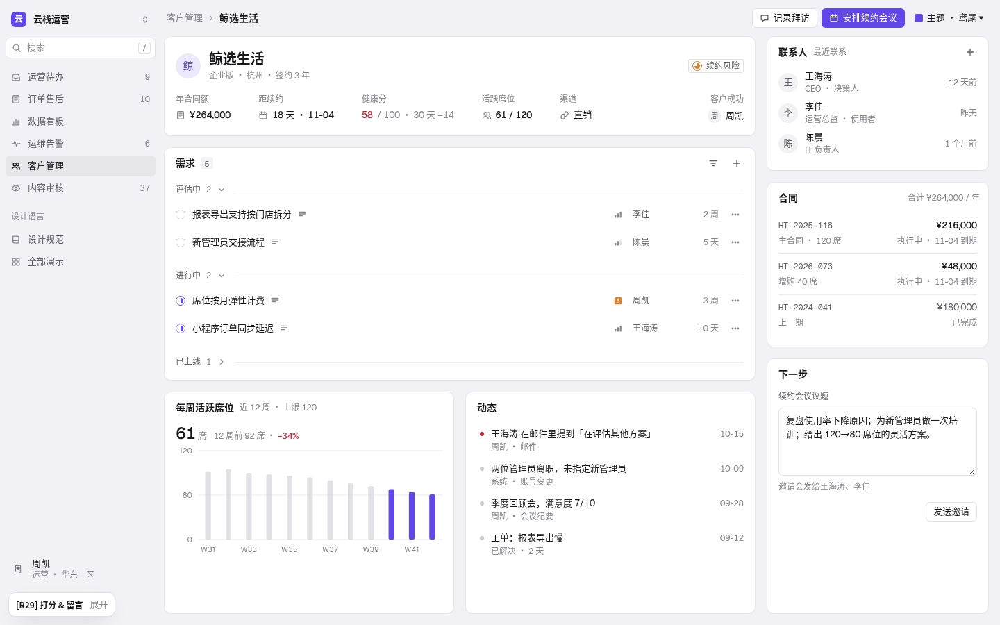
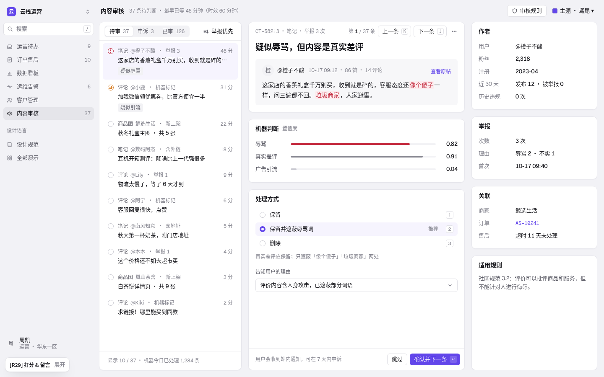
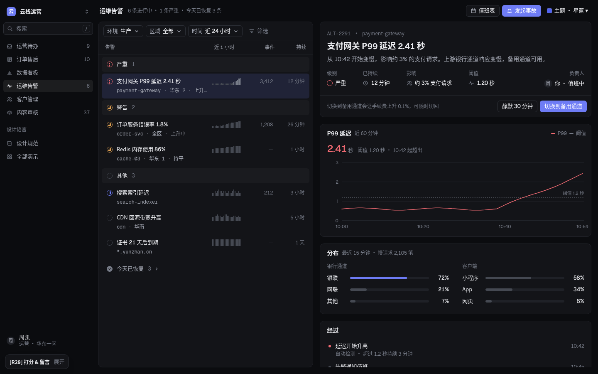

把内容放进面板，让变化看得见。
R28「临摹」得 65 分（目前最高），批注是「没有动效和面板组件，单纯的线条分割阅读还是很吃力」（数据看板）。R29 只改这两件事：用真正的面板分组（浅画布 + 白卡片，不再只靠 1px 线），加有目的的轻动效（悬停、页签滑动、展开收起、抽屉、骨架屏、数字与图表入场，并完整支持「减少动态效果」）。R28 的低噪音规则——平的控件、只给图标上色、只有横线的表格、从 0 起的图表、Geist 数字、无衬线——全部保留。

为什么改
R28 把每页做成「一整块白面板 + 1px 线」。少量内容时很干净；但数据看板一屏有 4 个指标、1 张图、2 个侧块、1 张 8 行表，线条既是分组又是表格行线，读者要自己从十几条一样的线里分出「哪几条是一组」。眯眼测试（高斯模糊 10px）下 R28 的看板只剩一张白纸和几团字，R29 能清楚看到 4 + 1 + 2 + 1 个块。
动效同理：R28 的切换、展开、抽屉都是瞬间替换，评审时看不出「哪里变了」。
面板案例（文字结论，截图不发布）
本轮补采 22 张卡片式后台与设计系统页面（Vercel 可观测 / Analytics / Speed Insights、Stripe 支付分析、PostHog 看板（亮 / 暗）、Linear Dashboards / Insights、Supabase 报表、shadcn 仪表盘、Tremor、Tailwind Catalyst，以及 Ant Design Pro、Arco Pro 作为反例），实时站点还读取了计算后的背景、圆角、边框、阴影和间距。
像素研究
对案例截图和 R29 渲染做同一套量化：取两种最多的浅色作画布 / 卡片，算 CIE L* 差；整列 / 整行 ≥85% 为画布色的连续段算作沟槽。
| 页面 | 画布 → 卡片 ΔL* | 沟槽 | 读感 |
|---|---|---|---|
| Arco 工作台 / 数据分析 | 4.1 | 16–18 | 面板清楚 |
| PostHog 看板（亮 / 暗） | 3.8 / 2.9 | 16 | 面板清楚 |
| Ant Pro 工作台 | 3.5 | 22–28 | 清楚但偏松 |
| Vercel 可观测 | 2.8 | — | 清楚 |
| Vercel Speed / shadcn | 1.4 | — | 主要靠描边 |
| Tremor | 0.6 | — | 几乎只靠描边 |
| R29 鸢尾 / 星蓝 | 4.1 / 3.0 | 16 | 其他 5 套亮色主题 4.0–4.4 |
初版用了 ΔL* 3.4、沟槽 12；并排对比与眯眼测试后改为 4.1 / 16（见复核记录）。
动效案例
| 来源 | 悬停 | 小件 | 中件 | 曲线 |
|---|---|---|---|---|
| Linear 官网 | 100ms | 160ms | — | .25,.46,.45,.94；大位移 .32,.72,0,1 |
| Vercel Geist | 150ms | 150–200ms | 入场 200ms | .4,0,.2,1 |
| shadcn / Radix | 150ms | 菜单 100ms | — | .4,0,.2,1 |
| IBM Carbon | 70–110ms | 150ms | 240ms | 入场 0,0,.38,.9；退场 .2,0,1,.9 |
| Fluent 2 | 动效要有目的、限制在焦点元素；列表入场短间隔错开；必须提供无动效 | |||
结论：四档时长（100 / 160 / 240 / 480ms）；入场 ease-out、退场 ease-in 且更快；只动发生变化的元素；错开 30–40ms；骨架屏只在真等待时；尊重 prefers-reduced-motion。
演示 ↔ 参考
| 演示 | 参考模式 | 面板与动效 |
|---|---|---|
| 数据看板 | Stripe 首页指标格 + Vercel 图表卡 | 4 个可点的指标格就是图表的页签（选中 = 主色描边）；每小时 / 每天曲线放在图表卡里，区域贡献、华东退款率各一张小卡，排行表一张卡。切换「今天 / 本周 / 本月」先出骨架、数字从旧值滚到新值。 |
| 运营待办 | Linear 我的事项 + Vercel 面板 | 左边一张列表卡（分组色带内缩为圆角条，「今天已办」可展开），右边一摞卡：概况（标题 + 属性 + 主操作）、明细、清单、动态；换任务时详情淡入。 |
| 订单售后 | Stripe 发票列表 + 指标格 | 4 个数字格（待处理 / 已超时 / 今天已处理 / 平均时长）+ 一张表格卡；切页签先出行骨架；点行从右侧滑出浮起的抽屉卡，Esc / 点遮罩关闭。 |
| 运维告警 | Sentry 问题流 + Grafana / Datadog 面板 | 告警列表卡（「今天已恢复」默认收起）+ 详情一摞卡：概况、P99（先给 2.41 秒结论再给图）、分布、经过。 |
| 客户管理 | Linear 客户页 + Attio 右栏 | 概况卡、需求卡（三个状态组可折叠，「已上线」默认收起）、席位图卡 + 动态卡并排；右栏联系人 / 合同 / 下一步三张小卡。 |
| 内容审核 | Intercom 收件箱 + Plain 工单卡 | 队列卡 / 中栏三张卡（内容、机器判断、处理方式）/ 右栏四张小卡；J / K / 1–3 / Enter 流转，中栏和右栏同步淡入。 |





令牌
R28 的文字、线、状态、图表令牌不变；新增面板和动效两组。
| 令牌 | 值 | 用途 |
|---|---|---|
--r-card / --gap | 10px / 16px | 卡片圆角 / 卡间距与外边距 |
--shadow-card | 0 1px 2px rgba(24,24,40,.045)；深色 none | 只让卡片底边略实，不浮起 |
| 卡片头 / 内距 | 44px；左 16 右 12；内容 0 16 16 | 标题 14/600、说明 12–13 灰 |
| 指标格 | 内距 14 16；标签 12、数字 24/500（行高 30 固定）、说明 12 | 选中：主色 55% 描边 + 1px 内圈 |
曲线：--ease-out .25,.46,.45,.94（入场）；--ease-in .4,0,1,1（退场）；--ease-move .32,.72,0,1（抽屉）。卡片入场错开 35ms、最多 12 张；柱子错开 18ms。
面板规则 R1–R11
左边用 R29 组件渲染，右边是常见的错误写法（全部由本页 HTML 画出，不是截图）。
R1 · 浅画布 + 白卡片分组
GMV
退款率
区域贡献
依据：R28 评分批注「单纯的线条分割阅读还是很吃力」。像素研究：有面板感的案例（Ant / Arco / PostHog / Vercel 可观测）画布与卡片 ΔL* 2.8–4.1，沟槽 16–18；r29 取 ΔL* 4.1、沟槽 16。
R2 · 卡片靠 1px 描边成形，投影几乎看不见
订单数
客单价
依据：Vercel、PostHog、Linear、shadcn、Tremor、Arco 都用 1px 浅线；只有 Ant 用无边框 + 极淡投影。cases.md 面板结论 2。
R3 · 卡片头：14/600 标题 + 灰说明 + 右侧操作
每小时 GMV
本周依据：PostHog / Vercel / Linear 的卡片头都是「标题 + 说明 + 右侧操作」一行。
R4 · 一张卡讲一件事，卡里不再套卡
6 笔退款等你批准
依据：cases.md 面板结论 6；测试脚本检查 .card .card 数量为 0。
R5 · 指标格就是图表页签
依据：Stripe 支付分析：选中的指标格用强调色描边，图表随之切换；Vercel Analytics 把指标放在图表卡头部。
R6 · 卡片里的分组色带要内缩
依据：r29 第 1 轮审查发现，demo / ops 两页已改。
R7 · 状态颜色只给 14px 图标（沿用 R28）
依据：cases.md 面板结论 7：卡片要配上低噪音内容才干净（Ant Pro / Arco Pro 的问题在卡片内容）。
R8 · 卡片里的表格只有横线，最后一行无线
| 金额 | 状态 | 单号 |
|---|---|---|
| 超时 11 天 | AS-10241 | |
| 处理中 | AS-10226 |
| 金额 | 状态 | 单号 |
|---|---|---|
| ¥238.00 | 超时 | AS-10241 |
依据：Stripe 发票：只有横线 #E3E8EE；r29 .card .tbl tbody tr:last-child td 无底线。
R9 · 控件仍然全平
依据：测试脚本逐个检查 .btn 的 box-shadow 与 background-image：6 页 × 2 主题均为平。
R10 · 图表卡先给结论数字，再给图
P99 延迟
P99 延迟
依据：Supabase 报表、Linear Insights：每个图表面板「标题 + 当前值 + 图」。
R11 · 选中轻、切换有过渡
依据：Fluent 2：动效限制在焦点元素；Linear 切换详情为快速淡入。
动效规则 M1–M6
下面每一对都是活的：点按钮、悬停或点组头即可看到差别。系统开启「减少动态效果」时，左边的正确写法全部变成瞬时切换（右边的错误示范也停止循环）。
M1 · 页签 / 分段：160ms 滑动
M2 · 悬停只改底色
M3 · 展开收起：240ms 高度过渡
M4 · 抽屉：从右侧滑入，退出更快
M5 · 骨架屏形状和内容一致，只在真等待时
GMV
GMV
M6 · 数字只在变化时动一次
减少动态效果
CSS 层：@media (prefers-reduced-motion: reduce) 把所有动画、过渡的时长和延迟归零。JS 层：检测到该设置时跳过首屏骨架、数字直接显示终值、图表不播放入场、抽屉直接到位。测试脚本在该模式下检查 document.getAnimations() 没有运行中的动画。
主题
保留全部主题：鸢尾（默认）、钴蓝、湖蓝、石墨、晴窗、珊瑚和深色「星蓝」（midnight）。每套亮色主题的画布都调到与卡片 ΔL* ≈ 4；深色下画布 #0B0C0F、卡片 #131418、卡片描边 #23252B、无卡片投影，抽屉用 1px 外圈 + 深投影。

复核记录
每页至少 4 轮并排复核（R28 ↔ R29 全图、2 倍局部、深色、1280 宽、交互状态），数据看板和内容审核各多 3 轮；另做动效逐帧、眯眼和噪音对比。案例截图只留在本地研究目录，这里只写结论。
| 轮次 | 发现 | 改动 |
|---|---|---|
| 1 · R28 ↔ R29 全图 | 分组在缩略图尺寸就可见；排行表 GMV 列的整块灰底像按钮；需求卡组头离卡边只有 12px。 | GMV 改「金额右对齐 + 6px 细条」，与区域贡献统一；需求卡内距 16。 |
| 2 · 深色 | 画布 / 卡片 ΔL* 3.0，无投影也分得开；选中指标格描边偏弱但可辨。 | 无需改动。 |
| 3 · 1280 宽 | 运营待办 / 运维告警列表固定 480 / 520px，详情属性挤成 2–3 行。 | 列表宽改为 clamp(400px, 34vw, 480px) / clamp(440px, 36vw, 520px)。 |
| 4 · 交互状态 | 「本月 × 订单数」纵轴 20000 无千分位、贴边；退款率图 0–6% 区间太宽。 | 刻度 ≥1 万写「2 万」、≥1000 加千分位；退款率 1–5%，警戒线 3% 单独标注。 |
| 5 · 2 倍局部 | 指标格数字基线差 2px（button 垂直居中）；同列上下卡片缩进 20 / 16 不齐；内容卡标题比卡头多缩 4px。 | 指标格改为从上排、数字行固定 30px；卡内统一 16px；DOM 复测对齐。 |
| 6 · 其余亮色主题（看板 + 审核） | 钴蓝、晴窗、湖蓝的画布比鸢尾浅（ΔL* 3.5–3.7）。 | 三套画布加深到 ΔL* 4.2–4.4。 |
| 7 · 悬停 / 焦点（看板 + 审核） | 指标格悬停几乎看不出，不利于发现「格子能点」。 | 未选中格悬停描边带 32% 主色。 |
| 动效逐帧 | 首屏 0–380ms 卡片上浮 + 骨架，≈400ms 出内容，≈1.0s 全部静止；抽屉 140ms 基本到位，退出更快；展开 240ms 连续、不跳。 | 无需改动。 |
| 眯眼 / 噪音（对 R28） | 像素级细线：6 页均减少（看板 26 → 11、审核 29 → 6）；文字样式数持平或 −1；颜色数 +1~2（画布、卡片描边）。初版画布 ΔL* 3.4 眯眼时卡片轮廓偏弱。 | 画布 #F4F4F7 → #F2F2F6（ΔL* 4.1），卡间 12 → 16。 |
验收清单
- 每页内容都在白卡片里，画布可见；一张卡讲一件事，卡里不套卡（测试：
.card .card= 0）。 - 卡片 1px 描边 + 极淡投影，圆角 10，卡间 16；控件仍全平（测试：无投影、无渐变）。
- 卡片头一行：标题 + 说明 + 右侧操作；图表卡先给结论数字。
- 看板指标格就是图表页签；切换范围有骨架和数字过渡。
- 悬停 100ms 只改颜色；页签 160ms 滑动；展开 240ms；抽屉 280 / 240ms。
- 骨架只在首屏和切换数据时；图表、数字只入场一次。
- 减少动态效果：无运行中动画、直接显示终值。
- 字号 12 / 13 / 14 / 20 / 24，Geist 数字，无衬线；状态只给图标上色。
- 7 套主题结构一致；1280 / 1440 无横向滚动、无遮挡、无截断。